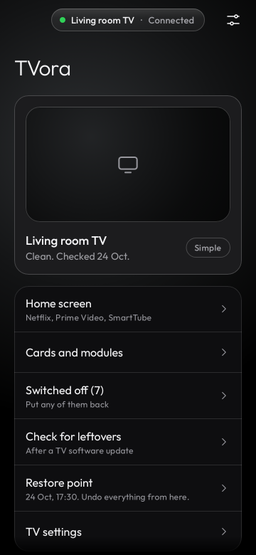

01Android · TV customization · Kotlin & Compose
TVora
Clean up and personalise an Android TV from your phone — with a way back for every change.

Problem
Arranging apps, swapping wallpaper and clearing clutter means many trips through TV menus.
What I built
TVora, built on the open-source Clean Your TV app and launcher. I added phone pairing, wallpaper import, app visibility and placement, a Bluetooth shortcut and recovery fixes.
Key decisions
- Connects over local ADB; the TV owner authorizes debugging.
- Cleanup shows a plan first and saves a restore point.
- A restore ends on the TV’s restored Home screen; skipped steps are reported, never hidden.
- Hiding an app never uninstalls it.
Credits & status
Built on Clean Your TV by udhaykumarbala, with the launcher, themes and TV lists by Gathin & contributors. MIT licensed. Release 0.1.2, 5 Nov 2026.